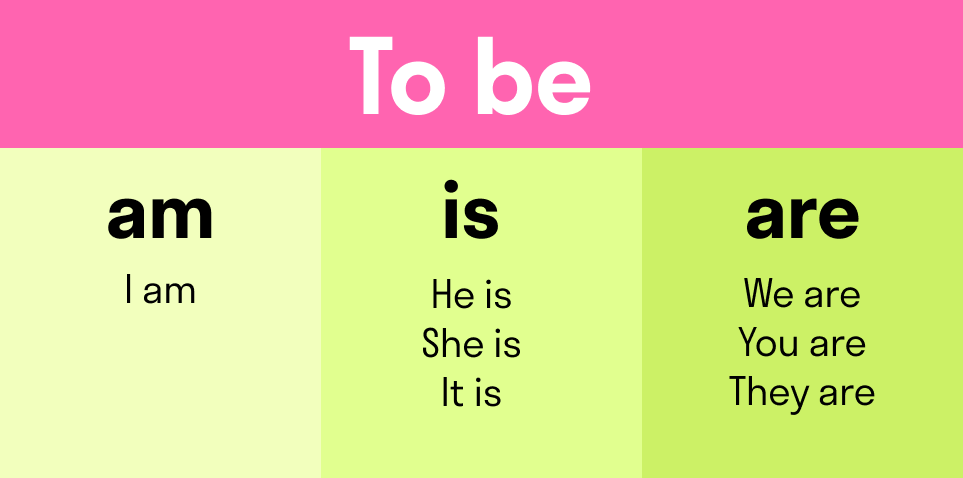
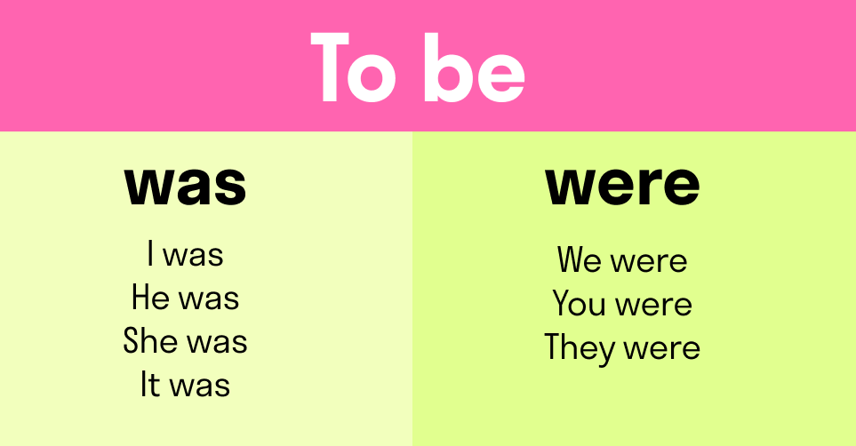

Глагол to be
В английском языке есть две группы глаголов: смысловые и вспомогательные. Смысловые обозначают какое-то действие — играть (to play), надеяться (to hope), спать (to sleep) и так далее. Вспомогательный сам по себе не несет смысловой нагрузки, но он позволяет нам понять контекст — с его помощью вы можете определить время и количество действующих лиц. Вспомогательные глаголы не переводятся, но английский без них обойтись не может. Глагол to be может быть и смысловым, и вспомогательным. To be переводится «to be» как «быть», «находиться», «существовать» или «являться». Например, I want to be with you («Я хочу быть с тобой») или To be or not to be («Быть или не быть»). Но, как мы уже сказали, он может и не переводиться вообще. По-русски мы говорим «Это не моя собака», «Билли у себя в офисе», «Какое сегодня число?» или «Мы друзья», не используя никаких глаголов. В английском так не получится: обязательно потребуется глагол to be в той или иной форме.
Настоящее время
Спряжение to be — один из краеугольных камней английской грамматики. Настоящее время используется чаще прочих, поэтому с него и начнем. В настоящем у глагола to be есть целых три формы: am, is и are. Am используется с I (Я). Is — c he (он), she (она), it (оно). Аre — с местоимениями we (мы), they (они) и you, которое в английском может означать «ты», вежливое «вы» и «вы» при обращении к группе людей.

Прошедшее время
Формы этого глагола в прошедшем времени запомнить еще проще. Их всего две: was для единственного числа и were — для множественного (включая you, который, как мы помним, по-английски значит не только «ты», но и «вы» при обращении к группе людей). Говорим об одном человеке или предмете — используем was. О нескольких — were.

Будущее время
Тут все совсем просто: в современном английском языке у глагола to be в будущем времени есть только одна форма — will.
Пример: I will meet my doctor tomorrow
Отрицательные предложения
Отрицательное предложение строится очень просто: нужно добавить после глагола частицу not.
Можно сократить: is not → isn't
are not → aren’t
were not → weren’t
was not → wasn’t
will not → won’t.
Вопросительные предложения
вопросы с глаголом to be строятся очень просто: выносим глагол в самое начало предложения и ставим перед подлежащим.